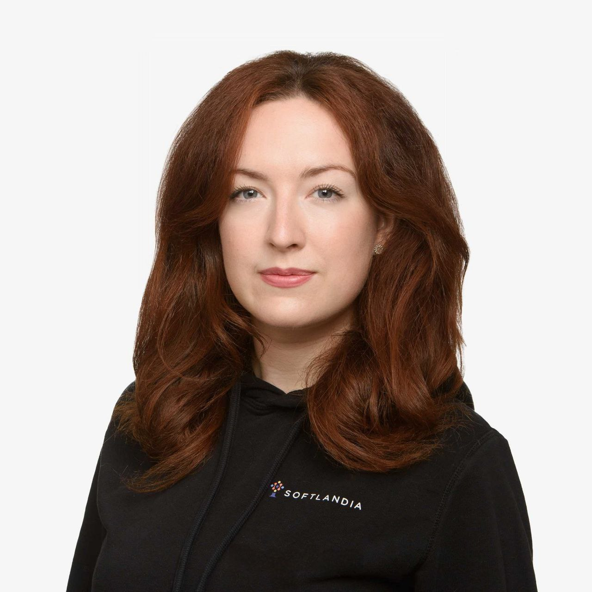

Margarita Nefedova
Project Coordination • Operations • IT Processes
Finland-based professional interested in project coordination, operations, team support, and IT-related process management.
About Me
I am a Finland-based professional with experience in project coordination, operations, AI tool documentation, and customer-oriented work environments. I enjoy organizing processes, supporting teams, improving workflows, and working in international environments.
Currently, I am completing my Master's studies in Tampere while building experience in IT-related coordination and operational roles.
What I’m Looking For
I am interested in roles related to project coordination, operations, team support, process management, and IT environments.
I am especially interested in positions such as Project Coordinator, Operations Coordinator, Team Coordinator, IT Coordinator, Project Manager Assistant, or similar organizational roles.
Work Experience
Sales and Marketing Specialist
Softlandia Ltd. · May 2025 — Present · Tampere, Finland
Working with communication, operational support, marketing activities, documentation, and development-related tasks in an IT company environment.
Supporting internal processes, content creation, coordination tasks, and AI-related product activities.
IT and Marketing Assistant / Trainee
Softlandia Ltd. · Jan 2024 — May 2025 · Tampere, Finland
Started as an internship trainee and later transitioned into broader IT support, documentation, communication, and marketing assistance roles.
Responsibilities included testing AI tool functionality, creating user documentation, supporting tutorial content production, prompt testing, process support, and assisting with internal operational tasks.
Customer Service and Café Roles
2016 — 2026 · Tampere and Pirkkala, Finland
Developed strong communication, multitasking, customer service, teamwork, and workplace coordination skills through several service industry positions.
Education
Tampere University
Master’s Degree · Software Engineering / Computer Science
Jan 2026 — Jun 2027
Currently completing Master’s studies focused on software engineering, development processes, and modern IT systems.
Tampere University
Bachelor’s Degree · Computer Science
Aug 2022 — Dec 2025
Studied computer science, software development fundamentals, and digital technologies in an international university environment.
Tampereen klassillinen lukio
Upper Secondary School · Experiential Science Programme
2015 — 2018
Completed upper secondary education with focus on science-oriented studies.
Skills
- Project Coordination
- Operations Support
- Documentation
- AI Tools
- Prompt Engineering
- Written Communication
- Process Organization
- User Experience
- Team Support
- Customer Service
Languages
- Finnish — Native
- Russian — Native
- English — Working Proficiency
Contact
Email: margarita.a.nefedova@gmail.com
LinkedIn: https://www.linkedin.com/in/margarita-nefedova-926657297/
GitHub: github.com/MargaritaNefedova